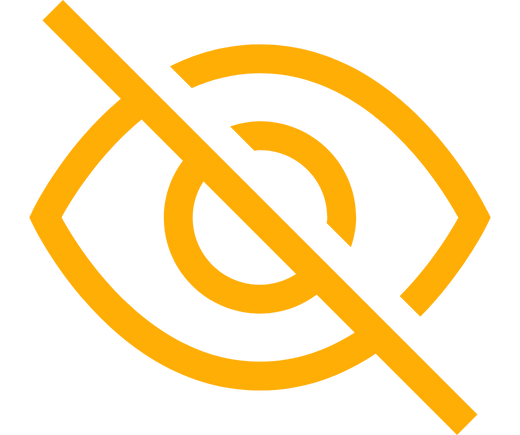
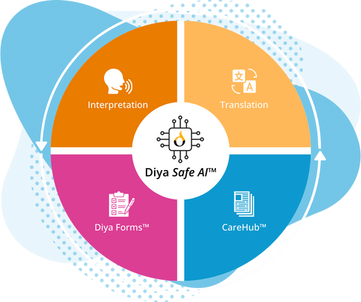
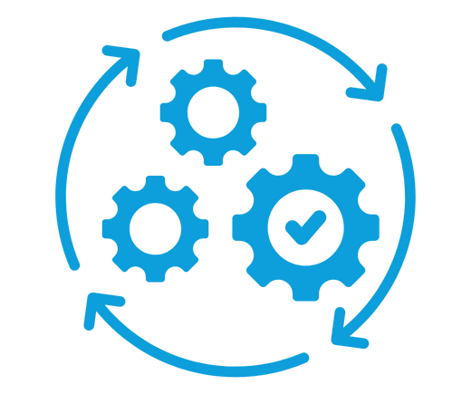
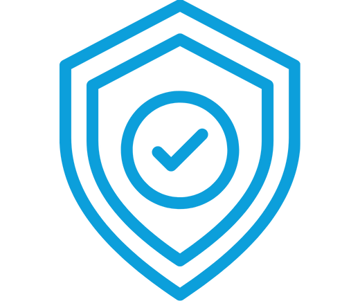

Contact Us
Explore how Diya Safe AI™ supports your health system
Healthcare communication demands more than speed and accuracy. It requires governance, safety, and accountability

Diya Safe AI™
The trust layer that ensures communication can scale across care settings without introducing risk
Language support in healthcare is no longer occasional or peripheral. It's continuous, distributed, and embedded across care
Governance is what allows healthcare communication to move from
workaround
infrastructure
Without a clear governance model:
Communication happens outside clinical systems

Visibility & auditability are lost
Risk is managed informally, if at all
Trust erodes — internally & with patients
Diya Safe AI™ is not a feature layer.
It's embedded into the platform architecture
Every platform interaction runs through the same AI governance controls — regardless of language, care setting, EHR integration, or patient population

Interpretation
Translation
Diya Forms™
CareHub™



Infrastructure
Secure cloud infrastructure with tenant isolation & centralized key management
Model Governance
AI models are validated & version-controlled. Client data is not used for training
Human Oversight
Human-in-the-loop review applied to critical workflows or upon request
Bias Monitoring
Bias audits, fairness evaluations, & monitoring for drift over time
Incident Response
Documented workflows support detection, containment, & client notification
Diya Safe AI™ aligns with the expectations of large health systems, including:
Healthcare data protection & privacy requirements
Enterprise security & IT reviews
Clinical risk management processes
Centralized governance with local operational flexibility
Interaction metadata
Dates, timestamps, languages
Role-based access controls
System & configuration activity audit logs
Quality & safety signals
Incident review & escalation records


Aligns with major healthcare and data protection frameworks
HIPAA
U.S.
GDPR
EU & UK
PIPEDA
Canada
Privacy by design. Security by default. Embedded at the platform level
Strong governance doesn't slow adoption — it enables it. Diya Safe AI™ moves cautious pilots to confident, system-wide communication


Reduces:
Fragmented oversight across vendors
Uneven risk management
Repeated security & compliance reviews
Explore how Diya Safe AI™ supports your health system